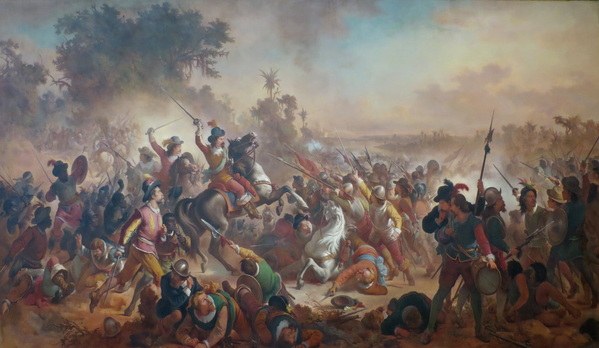
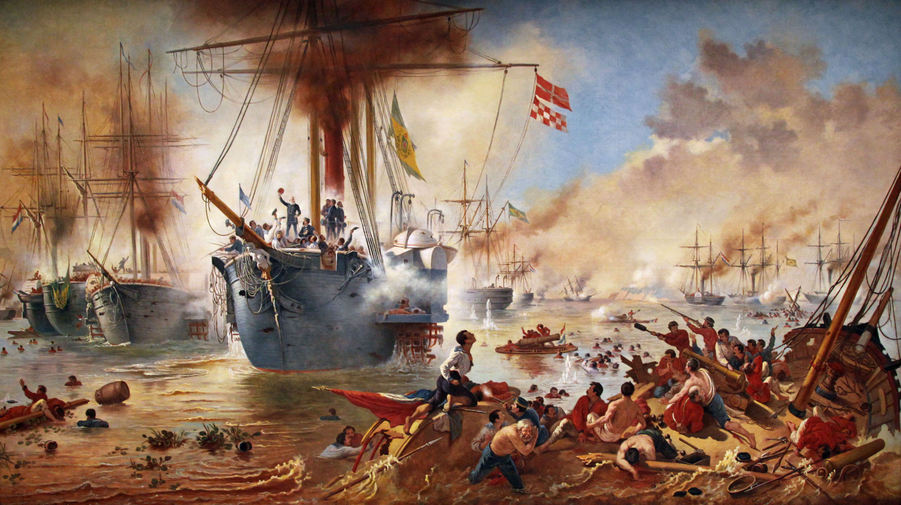
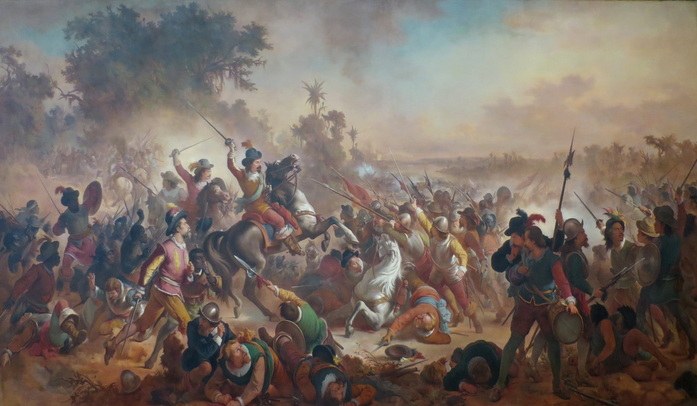
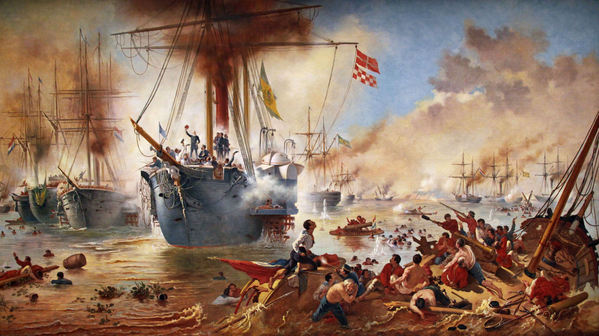
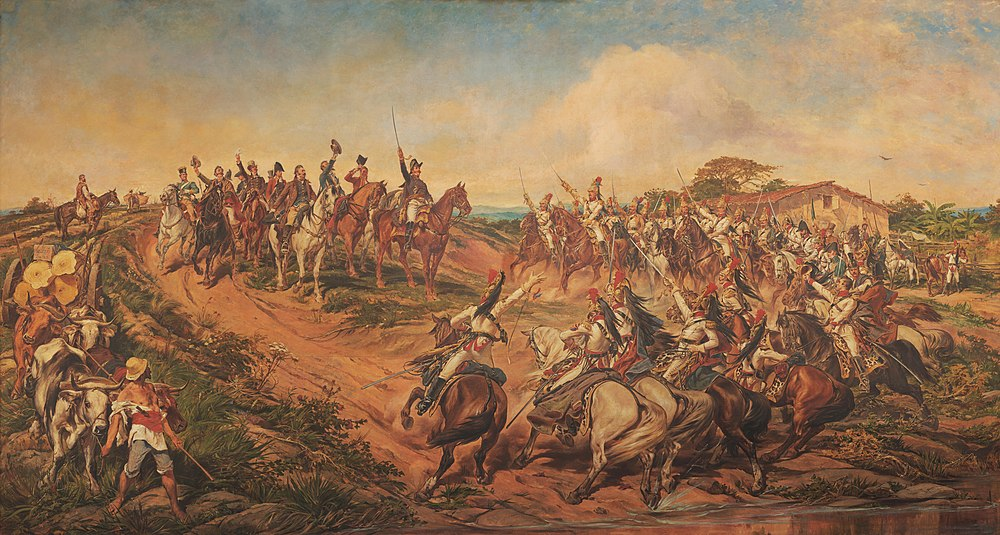
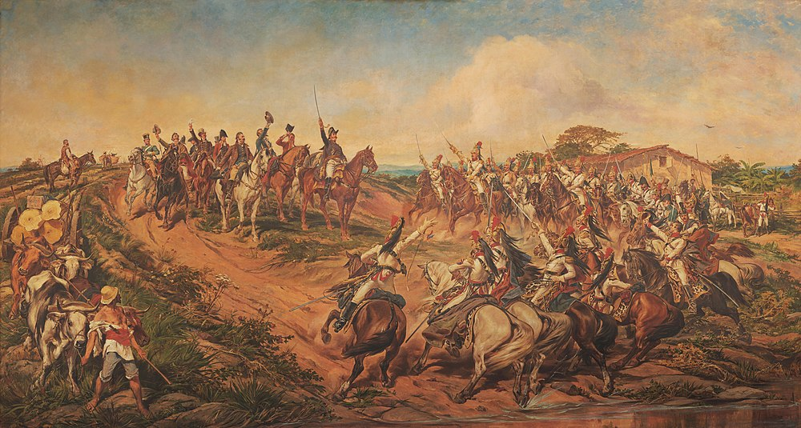

“Em iniciais estudos da segunda metade do século XX sobre a arte da época imperial brasileira, foi considerado que o Brasil seguiu os movimentos artísticos europeus, tendo sua revolução artística apenas no início do século seguinte. Porém, é um tremendo engano subestimar tanto assim a majestosa Escola Imperial de Belas artes.”
-Douglas N.
Na historiografia tradicional, havia-se cristalizado a ideia de que o nosso século XIX vegetara alienadamente no "neoclassicismo ou academicismo", até ser sacudido pelo modernismo no início do século XX, mais especificamente das décadas de 1910 e 1920. Esta ideia começou a ser desconstruída a partir de algumas publicações dos anos 1970 e 1980: os livros História geral da arte no Brasil e Arte no Brasil. Seus autores introduziram, ainda de forma relativamente leve, a compreensão de que outros estilos artísticos – tais como romantismo, realismo, impressionismo e simbolismo – foram tratados pelos artistas brasileiros – embora reconhecessem neles sempre uma abordagem conservadora. Mário Barata fala claramente de um "romantismo acadêmico"1 e José Roberto Teixeira Leite demonstra o apreço dos pintores do final do século pelo realismo, impressionismo e simbolismo, enfatizando o caráter mais moderado que estes movimentos adquiriram no Brasil, cuja ligação com a Europa se dava muito mais quando já haviam perdido o caráter radical e vanguardista e tinham sido absorvidos pelos salões numa versão mais palatável ao gosto burguês2. A postura desses autores foi um avanço, pois abriu as portas para uma reflexão mais ampla sobre o que é realmente o academicismo e a maneira como a cultura brasileira lidou com os movimentos europeus a que foi exposta. Dentre os artistas brasileiros, pertencentes ao período denominado por Campofiorito de A proteção do imperador e os pintores do segundo reinado (1850-1890), possui o Museu Mariano Procópio telas de: João Zeferino da Costa (1840-1915); Pedro Américo de Figueiredo Mello (1843-1915); Estevão Roberto da Silva (1844-1894); Antônio Correia e Castro (1848-1929); Decio Rodrigues Villares (1851-1931); Horácio Hora (1853-1885); Francisco Aurélio de Figueiredo Mello (1854-1916); Pedro Alexandrino Borges (1856-1942); Rodolfo Amoedo (1857-1941) 5; Henrique Bernardelli (1858-1936); Belmiro de Almeida (1858-1935); Hipólito Caron 1862-1892); Alberto André Feijó Delpino (1863-1942); João Batista da Costa (1865-1926); Felix Bernardelli (1866-1905); Oscar Pereira da Silva (1867-1939); Augusto Luis de Freitas (1869-1912). Confira agora alguns artisas escolhidos pelo editor e quatro belas obras deles.
Victor Meirelles de Lima foi um pintor e professor brasileiro. De origens humildes, cedo seu talento foi reconhecido, sendo admitido como aluno da Academia Imperial de Belas Artes.
 



Pedro Américo de Figueiredo e Melo foi um romancista, poeta, cientista, teórico de arte, ensaísta, filósofo, político e professor brasileiro, mas é mais lembrado como um dos mais importantes pintores acadêmicos do Brasil, deixando obras de impacto nacional.

, em Florença, na Itália. A obra foi pintada entre os anos de 1872 e 1877, quando Américo tinha cerca de 29 anos, e retrata a Guerra do Paraguai,") 


José Ferraz de Almeida Júnior (Itu, 8 de maio de 1850 — Piracicaba, 13 de novembro de 1899), foi um pintor e desenhista brasileiro da segunda metade do século XIX. É frequentemente aclamado pela biografia como precursor da abordagem de temática regionalista, introduzindo assuntos até então inéditos na produção acadêmica brasileira: o amplo destaque conferido a personagens simples e anônimos e a fidedignidade com que retratou a cultura caipira, suprimindo a monumentalidade em voga no ensino artístico oficial em favor de um naturalismo.
Eliseu d'Angelo Visconti foi um pintor, desenhista e designer ítalo-brasileiro ativo entre os séculos XIX e XX. É considerado um dos mais importantes artistas brasileiros do período e o mais expressivo representante da pintura impressionista no Brasil.